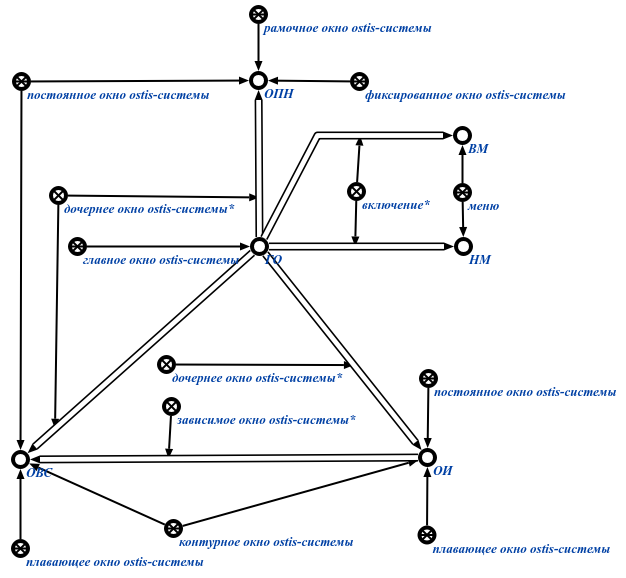

Команда поиска всех дочерних окон исходного окна предназначена для поиска всех дочерних окон окна, поданного на вход данной команде. Результатом выполнения команды являются все найденные дочерние окна в рамках согласованной части базы знаний Например:
